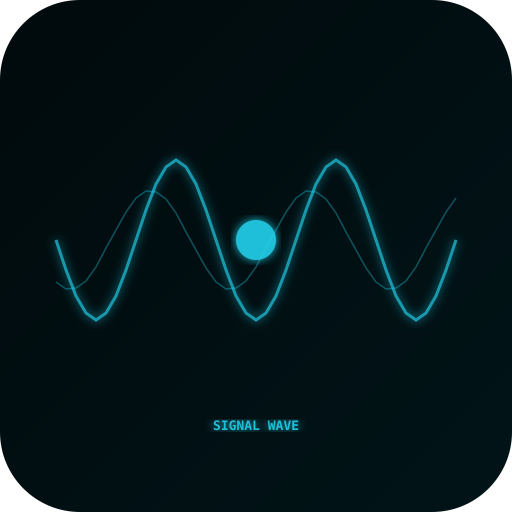
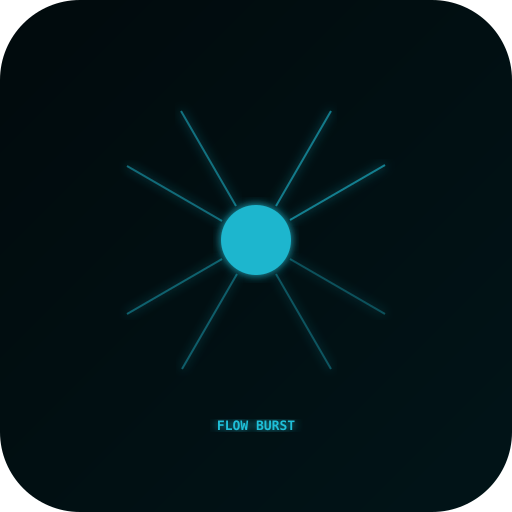
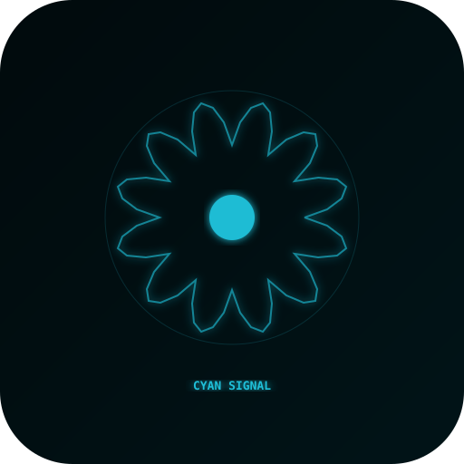
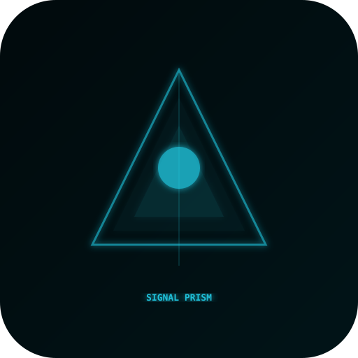
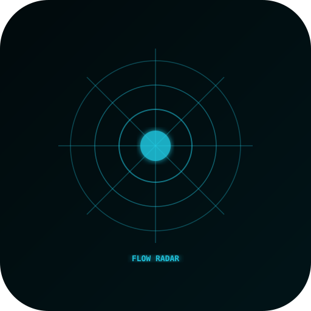
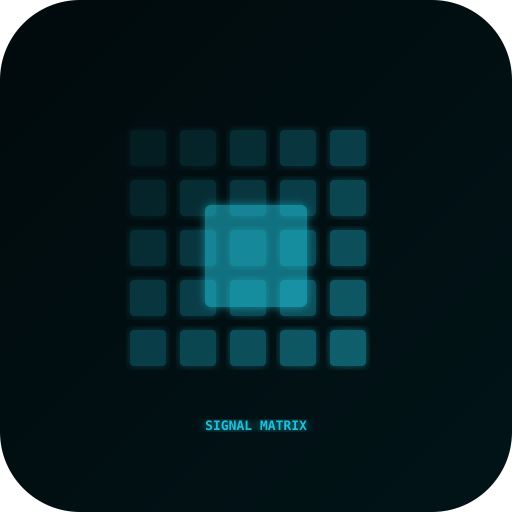
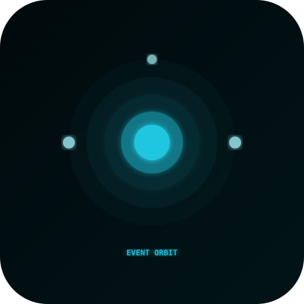
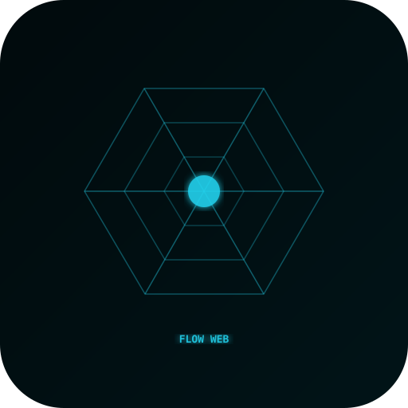
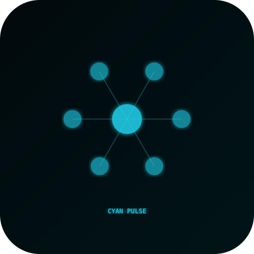
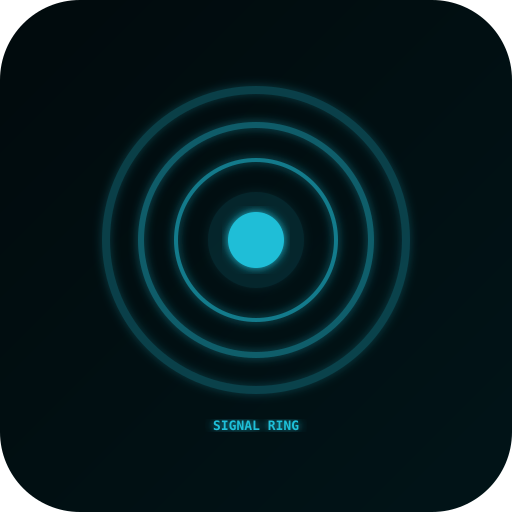

10 candidates

시그널 웨이브candidate_01_signal_wave.svg
플로우 버스트candidate_02_flow_burst.svg
시안 시그널candidate_03_cyan_signal.svg
시그널 프리즘candidate_04_signal_prism.svg
플로우 레이더candidate_05_flow_radar.svg
시그널 매트릭스candidate_06_signal_matrix.svg
이벤트 오빗candidate_07_event_orbit.svg
플로우 웹candidate_08_flow_web.svg
시안 펄스candidate_09_cyan_pulse.svg
시그널 링candidate_10_signal_ring.svg